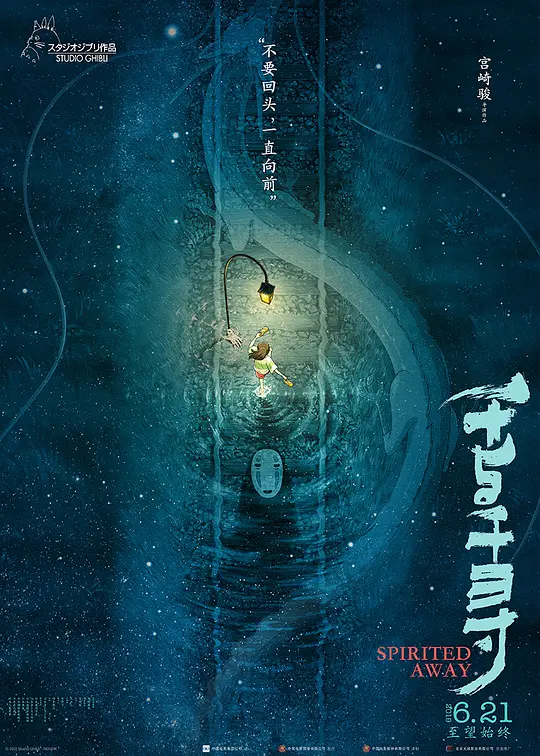

千与千寻

概况
导演: 宫崎骏
编剧: 宫崎骏
主演: 柊瑠美 / 入野自由 / 夏木真理 / 菅原文太 / 中村彰男 / 玉井夕海 / 神木隆之介 / 内藤刚志 / 泽口靖子 / 我修院达也 / 大泉洋 / 小林郁夫 / 上条恒彦 / 小野武彦
类型: 剧情 / 动画 / 奇幻
制片国家/地区: 日本
语言: 日语
上映日期: 2019-06-21(中国大陆) / 2001-07-20(日本)
片长: 125分钟
剧情简介
千寻和爸爸妈妈一同驱车前往新家，在郊外的小路上不慎进入了神秘的隧道——他们去到了另外一个诡异世界—一个中世纪的小镇。远处飘来食物的香味，爸爸妈妈大快朵颐，孰料之后变成了猪！这时小镇上渐渐来了许多样子古怪、半透明的人。千寻仓皇逃出，一个叫小白的人救了他，喂了她阻止身体消 失的药，并且告诉她怎样去找锅炉爷爷以及汤婆婆，而且必须获得一份工作才能不被魔法变成别的东西。千寻在小白的帮助下幸运地获得了一份在浴池打杂的工作。渐渐她不再被那些怪模怪样的人吓倒，并从小玲那儿知道了小白是凶恶的汤婆婆的弟子。一次，千寻发现小白被一群白色飞舞的纸人打伤，为了救受伤的小白，她用河神送给她的药丸驱出了小白身体内的封印以及守封印的小妖精，但小白还是没有醒过来。为了救小白，千寻又踏上了她的冒险之旅。
预告片